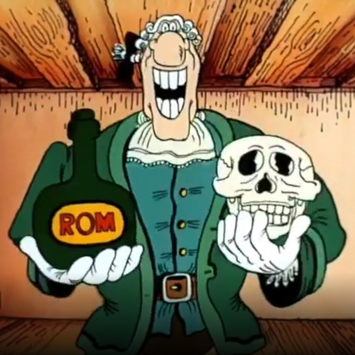

Доктор Ливси
Очень хороший и весёлый человек.Характер общительный. Не женат.
Кем на самом деле был Доктор Ливси?
Ливси всегда полон оптимизма и позитива,который ничем не прошибить, что наводит на мысли либо о последствиях контузии, либо о неудачной пластической операции (например, после травмы черепно-лицевых мышц - скажем, в результате подрыва ВУ в непосредственной близости от организма доктора). Кроме того, такой темперамент, стиль работы и общения очень близок к кругу матёрых диверсантов-подводников из организации с летучей мышкой на эмблеме: Ливси не напрягается. Конечно, самоуверенных персонажей за всю историю было - пруд пруди, но они, частенько огребая маслами по сусалам, канули в Лету с ногами в ванночке с бетоном, а вот Доктор Ливси... Скажем так, его навыки в рукопашке (особенно, в прикладной её части - фехтовании) просто находятся за гранью добра, зла и здравого смысла. Обратите внимание: Ливси настолько хорошо понимает рисунок боя и знает типовые виды атак оппонентов, что его тело работает на "автопилоте", а сам он может позволить себе отвлечься на что угодно - например, на ханами (японская национальная традиция любования цветами).Согласитесь, странные пристрастия для "обычного доктора" - фехтовать, как демон войны после пары литров кофе, и наслаждаться цветами в духе "детей страны Восходящего солнца"?... Впрочем, всё становится на свои места, если заподозрить в Ливси человека, который бывал в продолжительных командировках в Азии - в той же Японии. Итак, доктор Ливси с высокой долей вероятности - боевой пловец СпН ГРУ, бывал в длительных командировках в Азии, специалист в применении ядов, санинструктор.